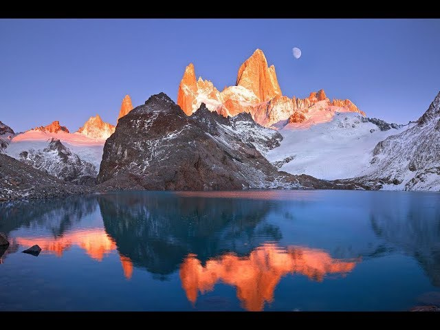
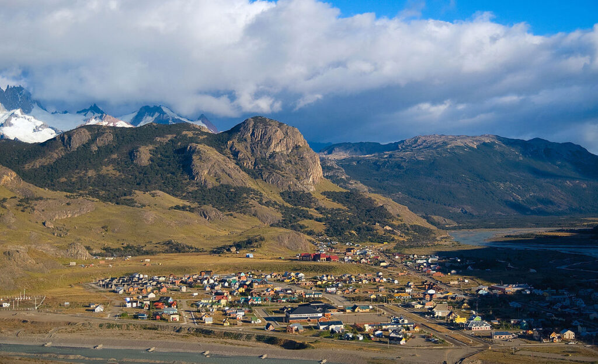
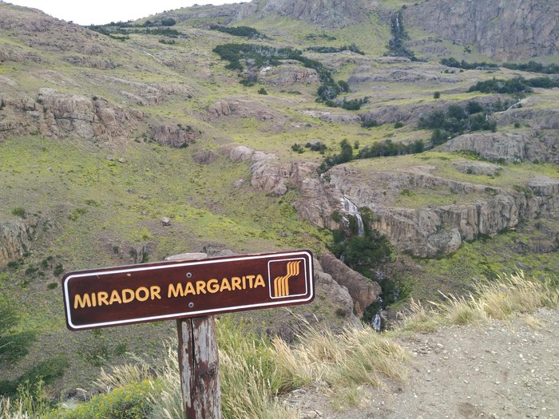

Laguna de los tres

La cabecera del sendero comienza al final de la Avenida San Martín, donde finaliza el ejido urbano de El Chaltén y se ubica el área para aparcar vehículos. Durante la primer hora de caminata la pendiente es algo pronunciada y accederás a un mirador natural del valle del río De las Vueltas.
El sendero comienza al final de la Avenida San Martín y se ubica el área para aparcar vehículos. Durante la primer hora de caminata la pendiente es pronunciada y accederás a un mirador natural del valle del río De las Vueltas.. Aaproximadamente a una hora y media del trayecto se accede a un mirador rocoso natural bien señalizado.A unas 4 horas de haber partido de El Chaltén se llega primero al Campamento base Poincenot y luego de cruzar el río Blanco la senda sigue con una pendiente empinada de aproximadamente 400 metros de desnivel hasta la laguna De los Tres, lo cual demandará algo más de una hora de esfuerzo. Esta es la vista más cercana de la pared granítica del monte Fitz Roy y sus agujas periféricas.
Mirador de los Condores

Partiendo desde El Chaltén, se cruza el puente de acceso sobre el río Fitz Roy y se continúa hasta la cabecera del sendero que parte en el predio del Centro de Visitantes del Parque Nacional. Pasando una pequeña tranquera un cartel te indicará el camino hacia la izquierda, y a pocos pasos otro cartel informativo te mostrará un croquis de la senda. Desde aquí será otra media hora hasta llegar al mirador Los Cóndores. Esta senda es relativamente nueva, pues ha sido habilitada en el año 2004. Está muy bien señalizada y en su trayecto posee varios carteles informativos que además aprovecharás para apreciar el paisaje a tu alrededor.
Como su nombre lo indica, el mirador está ubicado en un punto estratégico para la eventual observación de cóndores en su frecuente trayectoria de planeo hacia y desde el valle del río Fitz Roy.
Es además una excelente alternativa para apreciar los imponentes picos de granito y glaciares que dominan el horizonte.
Contemplar el atardecer desde este mirador puede ser una gran despedida de tu estadía en El Chaltén.
El sendero hacia el mirador Las Águilas comienza en la bifurcación señalizada a unos diez minutos antes de llegar al mirador Los Cóndores.
Este corto sendero tiene una pendiente suave, que a medida que avanza va descubriendo el gran lago Viedma en el horizonte.
El mirador es un balcón natural con una vista panorámica sobre la estepa y el lago Viedma hacia el sur, el cerro Huemul al Oeste y el cerro Pirámide hacia el Este.
Mirador cascada Margarita

Desde El Chaltén toma el sendero hacia la laguna Torre, que luego de una pequeña cuesta se adentra en el bosque de ladera compuesto principalmente por ñires.
Senda
En pocos minutos estarás al reparo del bosque, en una senda muy cómoda y con pendiente muy suave.
Senda
El camino comienza paulatinamente a ganar altura a la vez que se va alineando con el curso del río Fitz Roy hasta llegar a un mirador natural elevado sobre un acantilado sobre el río.
Vista panorámica
La panorámica desde este mirador hacia el Oeste muestra el valle del río Fitz Roy y su serpenteante curso de agua en el fondo, enmarcado por el singular cerro Solo a la izquierda, de telón de fondo el cordón Adela y el imponente cerro Torre, y a la derecha se divisa el Fitz Roy.
Río Fitz Roy
Justo del otro lado del río que surca el valle, se aprecia la cascada Margarita.
Cascada Margarita
Sugerencia: Si cuentas con tiempo adicional, vale la pena continuar el sendero por una hora más hasta el Mirador del Cerro Torre, uno de los dos miradores mas espectaculares de la zona.